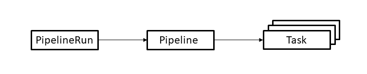
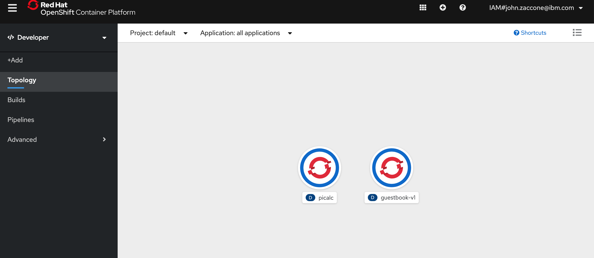
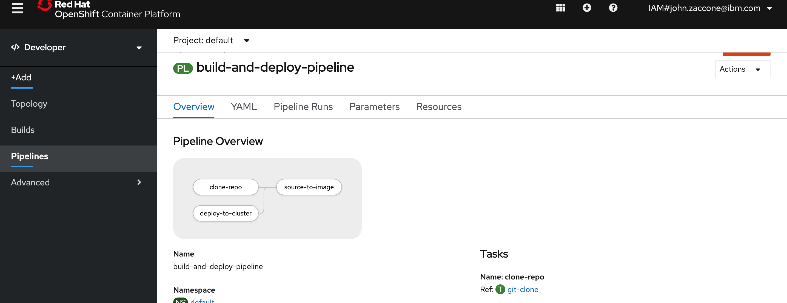

OpenShift Deployment using Tekton Pipelines¶
Tekton is an open source project to configure and run CI/CD pipelines within a OpenShift/Kubernetes cluster.
Introduction¶
In this tutorial you'll learn
- what are the basic concepts used by Tekton pipelines
- how to create a pipeline to build and deploy a container
- how to run the pipeline, check its status and troubleshoot problems
Also, check out this very good tutorial by Red Hat.
Prerequisites¶
Before you start the tutorial you must set up a OpenShift environment with Tekton installed.
Follow this guide on installing OpenShift Pipelines
Create a route for the OpenShift registry if you have not done so already.
oc patch configs.imageregistry.operator.openshift.io/cluster --patch '{"spec":{"defaultRoute":true}}' --type=merge
Estimated time¶
1 hour
Steps¶
1. Tekton pipeline concepts¶
Tekton provides a set of extensions to Kubernetes, in the form of Custom Resources, for defining pipelines. The following diagram shows the resources used in this tutorial. The arrows depict references from one resource to another resource.

The resources are used as follows.
- A PipelineRun defines an execution of a pipeline. It references the Pipeline to run.
- A Pipeline defines the set of Tasks that compose a pipeline.
- A Task defines a set of build steps such as compiling code, running tests, and building and deploying images.
We will go into more detail about each resource during the walkthrough of the example.
Let's create a simple pipeline that
- builds a Docker image from source files and pushes it to your private container registry
- deploys the image to your Kubernetes cluster
2. Clone the repository¶
You should clone this project to your workstation since you will need to edit some of the yaml files before applying them to your cluster.
Check out the beta-update branch after cloning.
git clone https://github.com/IBM/tekton-tutorial-openshift
cd tekton-tutorial-openshift
We will work from the bottom-up, i.e. first we will define the Task resources needed to build and deploy the image, then we'll define the Pipeline resource that references the tasks, and finally we'll create the PipelineRun resource needed to run the pipeline.
3. Create a task to clone the Git repository¶
The first thing that the pipeline needs is a task to clone the Git repository that the pipeline is building.
This is such a common function that you don't need to write this task yourself.
Tekton provides a library of reusable tasks called the Tekton catalog.
It provides a git-clone task which is described here.
The task is reproduced below so that we can talk about it.
apiVersion: tekton.dev/v1beta1
kind: Task
metadata:
name: git-clone
spec:
workspaces:
- name: output
description: The git repo will be cloned onto the volume backing this workspace
params:
- name: url
description: git url to clone
type: string
- name: revision
description: git revision to checkout (branch, tag, sha, ref�)
type: string
default: master
- name: submodules
description: defines if the resource should initialize and fetch the submodules
type: string
default: "true"
- name: depth
description: performs a shallow clone where only the most recent commit(s) will be fetched
type: string
default: "1"
- name: sslVerify
description: defines if http.sslVerify should be set to true or false in the global git config
type: string
default: "true"
- name: subdirectory
description: subdirectory inside the "output" workspace to clone the git repo into
type: string
default: "src"
- name: deleteExisting
description: clean out the contents of the repo's destination directory (if it already exists) before trying to clone the repo there
type: string
default: "false"
results:
- name: commit
description: The precise commit SHA that was fetched by this Task
steps:
- name: clone
image: gcr.io/tekton-releases/github.com/tektoncd/pipeline/cmd/git-init:latest
script: |
CHECKOUT_DIR="$(workspaces.output.path)/$(params.subdirectory)"
cleandir() {
# Delete any existing contents of the repo directory if it exists.
#
# We don't just "rm -rf $CHECKOUT_DIR" because $CHECKOUT_DIR might be "/"
# or the root of a mounted volume.
if [[ -d "$CHECKOUT_DIR" ]] ; then
# Delete non-hidden files and directories
rm -rf "$CHECKOUT_DIR"/*
# Delete files and directories starting with . but excluding ..
rm -rf "$CHECKOUT_DIR"/.[!.]*
# Delete files and directories starting with .. plus any other character
rm -rf "$CHECKOUT_DIR"/..?*
fi
}
if [[ "$(params.deleteExisting)" == "true" ]] ; then
cleandir
fi
/ko-app/git-init \
-url "$(params.url)" \
-revision "$(params.revision)" \
-path "$CHECKOUT_DIR" \
-sslVerify="$(params.sslVerify)" \
-submodules="$(params.submodules)" \
-depth="$(params.depth)"
cd "$CHECKOUT_DIR"
RESULT_SHA="$(git rev-parse HEAD | tr -d '\n')"
EXIT_CODE="$?"
if [ "$EXIT_CODE" != 0 ]
then
exit $EXIT_CODE
fi
# Make sure we don't add a trailing newline to the result!
echo -n "$RESULT_SHA" > $(results.commit.path)
A task can have one or more steps. Each step defines an image to run to perform the function of the step. This task has one step that uses a Tekton-provided container to clone a Git repo.
A task can have parameters. Parameters help to make a task reusable. This task accepts many parameters such as:
- the URL of the Git repository to clone
- the revision to check out
Parameters can have default values provided by the task or the values can be provided by the Pipeline and PipelineRun resources that we'll see later.
Steps can reference parameter values by using the syntax $(params.name) where name is the name of the parameter.
For example the step uses $(params.url) to reference the url parameter value.
The task requires a workspace where the clone is stored.
From the point of view of the task, a workspace provides a file system path where it can read or write data.
Steps can reference the path using the syntax $(workspaces.name.path) where name is the name of the workspace.
We'll see later how the workspace becomes associated with a storage volume.
Apply the file to your cluster to create the task.
kubectl apply -f https://raw.githubusercontent.com/tektoncd/catalog/v1beta1/git/git-clone.yaml
4. Create a task to build an image and push it to a container registry¶
The next function that the pipeline needs is a task that builds a docker image and pushes it to a container registry.
The catalog provides a kaniko task which does this using Google's kaniko tool.
The task is described here.
The task is reproduced below.
apiVersion: tekton.dev/v1beta1
kind: Task
metadata:
name: kaniko
spec:
params:
- name: IMAGE
description: Name (reference) of the image to build.
- name: DOCKERFILE
description: Path to the Dockerfile to build.
default: ./Dockerfile
- name: CONTEXT
description: The build context used by Kaniko.
default: ./
- name: EXTRA_ARGS
default: ""
- name: BUILDER_IMAGE
description: The image on which builds will run
default: gcr.io/kaniko-project/executor:latest
workspaces:
- name: source
results:
- name: IMAGE-DIGEST
description: Digest of the image just built.
steps:
- name: build-and-push
workingDir: $(workspaces.source.path)
image: $(params.BUILDER_IMAGE)
# specifying DOCKER_CONFIG is required to allow kaniko to detect docker credential
# https://github.com/tektoncd/pipeline/pull/706
env:
- name: DOCKER_CONFIG
value: /tekton/home/.docker
command:
- /kaniko/executor
- $(params.EXTRA_ARGS)
- --dockerfile=$(params.DOCKERFILE)
- --context=$(workspaces.source.path)/$(params.CONTEXT) # The user does not need to care the workspace and the source.
- --destination=$(params.IMAGE)
- --oci-layout-path=$(workspaces.source.path)/image-digest
securityContext:
runAsUser: 0
- name: write-digest
workingDir: $(workspaces.source.path)
image: gcr.io/tekton-releases/github.com/tektoncd/pipeline/cmd/imagedigestexporter:v0.11.1
# output of imagedigestexport [{"key":"digest","value":"sha256:eed29..660","resourceRef":{"name":"myrepo/myimage"}}]
command: ["/ko-app/imagedigestexporter"]
args:
- -images=[{"name":"$(params.IMAGE)","type":"image","url":"$(params.IMAGE)","digest":"","OutputImageDir":"$(workspaces.source.path)/image-digest"}]
- -terminationMessagePath=image-digested
- name: digest-to-results
workingDir: $(workspaces.source.path)
image: stedolan/jq
script: |
cat image-digested | jq -j '.[0].value' | tee /tekton/results/IMAGE-DIGEST
You can see that this task needs a workspace as well.
This workspace has the source to build.
The pipeline will provide the same workspace that it used for the git-clone task.
The kaniko task also uses a feature called results.
A result is a value produced by a task which can then be used as a parameter value to other tasks.
This task declares a result named IMAGE-DIGEST which it sets to the digest of the built image.
A task sets a result by writing it to a file named /tekton/results/name where name is the name of the result, in this case IMAGE-DIGEST.
We will see later how the pipeline uses this result.
You may be wondering about how the task authenticates to the image repository for permission to push the image. This will be covered later on in the tutorial.
Apply the file to your cluster to create the task.
kubectl apply -f https://raw.githubusercontent.com/tektoncd/catalog/v1beta1/kaniko/kaniko.yaml
5. Create a task to deploy an image to a Kubernetes cluster¶
The final function that the pipeline needs is a task that deploys a docker image to a Kubernetes cluster. Below is a Tekton task that does this. You can find this yaml file at tekton/tasks/deploy-using-kubectl.yaml.
apiVersion: tekton.dev/v1beta1
kind: Task
metadata:
name: deploy-using-kubectl
spec:
workspaces:
- name: git-source
description: The git repo
params:
- name: pathToYamlFile
description: The path to the yaml file to deploy within the git source
- name: imageUrl
description: Image name including repository
- name: imageTag
description: Image tag
default: "latest"
- name: imageDigest
description: Digest of the image to be used.
steps:
- name: update-yaml
image: alpine
command: ["sed"]
args:
- "-i"
- "-e"
- "s;__IMAGE__;$(params.imageUrl):$(params.imageTag);g"
- "-e"
- "s;__DIGEST__;$(params.imageDigest);g"
- "$(workspaces.git-source.path)/$(params.pathToYamlFile)"
- name: run-kubectl
image: lachlanevenson/k8s-kubectl
command: ["kubectl"]
args:
- "apply"
- "-f"
- "$(workspaces.git-source.path)/$(params.pathToYamlFile)"
This task has two steps.
-
The first step runs
sedin an Alpine Linux container to update the yaml file used for deployment with the image that was built by thekanikotask. The step requires the yaml file to have two character strings,__IMAGE__and__DIGEST__, which are substituted with parameter values. -
The second step runs
kubectlusing Lachlan Evenson's populark8s-kubectlcontainer image to apply the yaml file to the same cluster where the pipeline is running.
As was the case in the git-clone and kaniko tasks, this task makes use of parameters in order to make the task as reusable as possible. It also needs the workspace to get the deployment yaml file.
You may be wondering about how the task authenticates to the cluster for permission to apply the resource(s) in the yaml file. This will be covered later on in the tutorial.
Apply the file to your cluster to create the task.
kubectl apply -f tekton/tasks/deploy-using-kubectl.yaml
6. Create a pipeline¶
Below is a Tekton pipeline that runs the tasks we defined above. You can find this yaml file at tekton/pipeline/build-and-deploy-pipeline.yaml.
apiVersion: tekton.dev/v1beta1
kind: Pipeline
metadata:
name: build-and-deploy-pipeline
spec:
workspaces:
- name: git-source
description: The git repo
params:
- name: gitUrl
description: Git repository url
- name: pathToContext
description: The path to the build context, used by Kaniko - within the workspace
default: src
- name: pathToYamlFile
description: The path to the yaml file to deploy within the git source
- name: imageUrl
description: Image name including repository
- name: imageTag
description: Image tag
default: "latest"
tasks:
- name: clone-repo
taskRef:
name: git-clone
workspaces:
- name: output
workspace: git-source
params:
- name: url
value: "$(params.gitUrl)"
- name: subdirectory
value: "."
- name: deleteExisting
value: "true"
- name: source-to-image
taskRef:
name: kaniko
runAfter:
- clone-repo
workspaces:
- name: source
workspace: git-source
params:
- name: CONTEXT
value: $(params.pathToContext)
- name: IMAGE
value: $(params.imageUrl):$(params.imageTag)
- name: deploy-to-cluster
taskRef:
name: deploy-using-kubectl
workspaces:
- name: git-source
workspace: git-source
params:
- name: pathToYamlFile
value: $(params.pathToYamlFile)
- name: imageUrl
value: $(params.imageUrl)
- name: imageTag
value: $(params.imageTag)
- name: imageDigest
value: $(tasks.source-to-image.results.IMAGE-DIGEST)
A Pipeline resource contains a list of tasks to run.
Each pipeline task is assigned a name within the pipeline; here they are clone-repo, source-to-image, and deploy-using-kubectl.
The pipeline configures each task via the task's parameters.
You can choose whether to expose a task parameter as a pipeline parameter, set the value directly, or let the value
default inside the task (if it's an optional parameter). For example this pipeline exposes the CONTEXT parameter from the
kaniko task (under a different name, pathToContext) but does not expose the DOCKERFILE parameter and allows it to default inside the task.
This pipeline also shows how to take the result of one task and pass it to another task.
We saw earlier that the kaniko task produces a result named IMAGE-DIGEST that holds the digest of the built image.
The pipeline passes that value to the deploy-using-kubectl task by using the syntax $(tasks.source-to-image.results.IMAGE-DIGEST)
where source-to-image is the name used in the pipeline to run the kaniko task.
By default Tekton assumes that pipeline tasks can be executed concurrently.
In this pipeline each pipeline task depends on the previous one so they must be executed sequentially.
One way that dependencies between pipeline tasks can be expressed is by using the runAfter key.
It specifies that the task must run after the given list of tasks has completed.
In this example, the pipeline specifies that the source-to-image pipeline task must run after the clone-repo pipeline task.
The deploy-using-kubectl pipeline task must run after the source-to-image pipeline task but it doesn't need to specify the runAfter key.
This is because it references a task result from the source-to-image pipeline task
and Tekton is smart enough to figure out that this means it must run after that task.
Apply the file to your cluster to create the pipeline.
kubectl apply -f tekton/pipeline/build-and-deploy-pipeline.yaml
7. Define a service account¶
Before running the pipeline, we need to set up a service account so that it can access protected resources. The service account ties together a couple of secrets containing credentials for authentication along with RBAC-related resources for permission to create and modify certain Kubernetes resources.
The 3rd command will create a secret that contains credentials for accessing the internal OpenShift image registry
Next, run the get routes command to view the registry endpoint. Copy it and insert it into the command after that replacing <Registry route>. Then, replace <your IBM ID> with the email address you used for the IBM Cloud account.
kubectl get routes -n openshift-image-registry
export REGISTRY=<Registry route>
export EMAIL=<your IBM ID>
kubectl create secret generic ibm-registry-secret --type="kubernetes.io/basic-auth" --from-literal=username=$(oc whoami) --from-literal=password=$(oc whoami -t)
kubectl create secret docker-registry pull-secret --docker-server=$REGISTRY --docker-username=$(oc whoami) --docker-password=$(oc whoami -t) --docker-email=$EMAIL
kubectl annotate secret ibm-registry-secret tekton.dev/docker-0=$REGISTRY
This secret will be used to both push and pull images from your registry.
Now you can create the service account using the following yaml. You can find this yaml file at tekton/pipeline-account.yaml.
apiVersion: v1
kind: ServiceAccount
metadata:
name: pipeline-account
secrets:
- name: ibm-registry-secret
---
apiVersion: v1
kind: Secret
metadata:
name: kube-api-secret
annotations:
kubernetes.io/service-account.name: pipeline-account
type: kubernetes.io/service-account-token
---
kind: Role
apiVersion: rbac.authorization.k8s.io/v1
metadata:
name: pipeline-role
rules:
- apiGroups: [""]
resources: ["services"]
verbs: ["get", "create", "update", "patch"]
- apiGroups: ["apps"]
resources: ["deployments"]
verbs: ["get", "create", "update", "patch"]
---
apiVersion: rbac.authorization.k8s.io/v1
kind: RoleBinding
metadata:
name: pipeline-role-binding
roleRef:
apiGroup: rbac.authorization.k8s.io
kind: Role
name: pipeline-role
subjects:
- kind: ServiceAccount
name: pipeline-account
This yaml creates the following Kubernetes resources:
-
A ServiceAccount named
pipeline-account. The service account references theibm-registry-secretsecret so that the pipeline can authenticate to your private container registry when it pushes and pulls a container image. -
A Secret named
kube-api-secretwhich contains an API credential (generated by Kubernetes) for accessing the Kubernetes API. This allows the pipeline to usekubectlto talk to your cluster. -
A Role named
pipeline-roleand a RoleBinding namedpipeline-role-bindingwhich provide the resource-based access control permissions needed for this pipeline to create and modify Kubernetes resources.
Apply the file to your cluster to create the service account and related resources.
kubectl apply -f tekton/pipeline-account.yaml
8. Create a PipelineRun¶
We've defined reusable Pipeline and Task resources for building and deploying an image. It is now time to look at how one runs the pipeline.
Below is a Tekton PipelineRun resource that runs the pipeline we defined above. You can find this yaml file at tekton/run/picalc-pipeline-run.yaml.
apiVersion: tekton.dev/v1beta1
kind: PipelineRun
metadata:
generateName: picalc-pr-
spec:
pipelineRef:
name: build-and-deploy-pipeline
params:
- name: gitUrl
value: https://github.com/odrodrig/tekton-tutorial
- name: pathToYamlFile
value: kubernetes/picalc.yaml
- name: imageUrl
value: <REGISTRY>/default/picalc
- name: imageTag
value: "1.0"
serviceAccountName: pipeline-account
workspaces:
- name: git-source
persistentVolumeClaim:
claimName: picalc-source-pvc
Although this file is small there is a lot going on here. Let's break it down from top to bottom:
-
The PipelineRun does not have a fixed name. It uses
generateNameto generate a name each time it is created. This is because a particular PipelineRun resource executes the pipeline only once. If you want to run the pipeline again, you cannot modify an existing PipelineRun resource to request it to re-run -- you must create a new PipelineRun resource. While you could usenameto assign a unique name to your PipelineRun each time you create one, it is much easier to usegenerateName. -
The Pipeline resource is identified under the
pipelineRefkey. -
Parameters exposed by the pipeline are set to specific values such as the Git repository to clone, the image to build, and the yaml file to deploy. This example builds a go program that calculates an approximation of pi. The source includes a Dockerfile which runs tests, compiles the code, and builds an image for execution.
NOTE You must edit the
picalc-pipeline-run.yamlfile to substitute the values of<REGISTRY>with the information for your private container registry. To find the value for<REGISTRY>, enter the commandoc get routes -n openshift-image-registry.
-
The service account named
pipeline-accountwhich we created earlier is specified to provide the credentials needed for the pipeline to run successfully. -
The workspace used by the pipeline to clone the Git repository is mapped to a persistent volume claim which is a request for a storage volume.
Before you run the pipeline for the first time, you must create the persistent volume claim for the workspace.
kubectl create -f tekton/picalc-pipeline-pvc.yaml
The persistent volume claim requests Kubernetes to obtain a storage volume. Since each PipelineRun references the same claim and thus the same volume, this means the PipelineRun can only be run serially to avoid conflicting use of the volume. There is funtionality coming in Tekton to allow each PipelineRun to create its own persistent volume claim and thus use its own volume.
Check that the persistent volume claim is bound before continuing.
$ kubectl get pvc picalc-source-pvc
NAME STATUS VOLUME CAPACITY ACCESS MODES STORAGECLASS AGE
picalc-source-pvc Bound pvc-662946bc-57f2-4ba5-982c-b0fa9db1d065 20Gi RWO ibmc-file-bronze 2m
9. Run the pipeline¶
All the pieces are in place to run the pipeline.
$ kubectl create -f tekton/run/picalc-pipeline-run.yaml
pipelinerun.tekton.dev/picalc-pr-c7hsb created
Note that we're using kubectl create here instead of kubectl apply.
As mentioned previously a given PipelineRun resource can run a pipeline only once so you need to create a new one each time you want to run the pipeline.
kubectl will respond with the generated name of the PipelineRun resource.
<!-- Let's use the tkn CLI to check the status of the PipelineRun.
While you can check the status of the pipeline using the kubectl describe command, the tkn cli provides much nicer output.
$ tkn pipelinerun describe picalc-pr-c7hsb
Name: picalc-pr-c7hsb
Namespace: default
Pipeline Ref: build-and-deploy-pipeline
Service Account: pipeline-account
Status
STARTED DURATION STATUS
2 minutes ago --- Running
Resources
No resources
Params
NAME VALUE
gitUrl https://github.com/IBM/tekton-tutorial
pathToYamlFile kubernetes/picalc.yaml
imageUrl us.icr.io/gregd/picalc
imageTag 1.0
Taskruns
NAME TASK NAME STARTED DURATION STATUS
picalc-pr-c7hsb-source-to-image-s8rrg source-to-image 56 seconds ago --- Running
picalc-pr-c7hsb-clone-repo-pvbsk clone-repo 2 minutes ago 1 minute Succeeded
This tells us that the pipeline is running.
The clone-repo pipeline task has completely successfully and the source-to-image pipeline task is currently running.
Continue to rerun the command to check the status. If the pipeline runs successfully, the description eventually should look like this:
$ tkn pipelinerun describe picalc-pr-c7hsb
Name: picalc-pr-c7hsb
Namespace: default
Pipeline Ref: build-and-deploy-pipeline
Service Account: pipeline-account
Status
STARTED DURATION STATUS
12 minutes ago 2 minutes Succeeded
Resources
No resources
Params
NAME VALUE
gitUrl https://github.com/IBM/tekton-tutorial
pathToYamlFile kubernetes/picalc.yaml
imageUrl us.icr.io/gregd/picalc
imageTag 1.0
Taskruns
NAME TASK NAME STARTED DURATION STATUS
picalc-pr-c7hsb-deploy-to-cluster-mwvfs deploy-to-cluster 9 minutes ago 10 seconds Succeeded
picalc-pr-c7hsb-source-to-image-s8rrg source-to-image 10 minutes ago 1 minute Succeeded
picalc-pr-c7hsb-clone-repo-pvbsk clone-repo 12 minutes ago 1 minute Succeeded
``` -->
Let's view the status of our pipeline run
```bash
kubectl get pipelinerun
NAME SUCCEEDED REASON STARTTIME COMPLETIONTIME
picalc-pr-dqwqb Unknown Running 5s
The pipeline will be successful when SUCCEEDED is True.
NAME SUCCEEDED REASON STARTTIME COMPLETIONTIME
picalc-pr-dqwqb True Succeeded 7m26s 4m49s
Check the status of the Kubernetes deployment. It should be ready.
$ kubectl get deploy picalc
NAME READY UP-TO-DATE AVAILABLE AGE
picalc 1/1 1 1 9m
You can curl the application using its NodePort service. First display the nodes and choose one of the node's external IP addresses. Then display the service to get its NodePort.
$ kubectl get nodes -o wide
NAME STATUS ROLES AGE VERSION INTERNAL-IP EXTERNAL-IP OS-IMAGE KERNEL-VERSION CONTAINER-RUNTIME
10.221.22.11 Ready <none> 7d23h v1.16.8+IKS 10.221.22.11 150.238.236.26 Ubuntu 18.04.4 LTS 4.15.0-96-generic containerd://1.3.3
10.221.22.49 Ready <none> 7d23h v1.16.8+IKS 10.221.22.49 150.238.236.21 Ubuntu 18.04.4 LTS 4.15.0-96-generic containerd://1.3.3
$ kubectl get svc picalc
NAME TYPE CLUSTER-IP EXTERNAL-IP PORT(S) AGE
picalc NodePort 172.21.199.71 <none> 8080:30925/TCP 9m
$ curl 150.238.236.26:30925?iterations=20000000
3.1415926036
Debugging a failed PipelineRun¶
Let's take a look at what a PipelineRun failure would look like. Edit the PipelineRun yaml and change the gitUrl parameter to a non-existent Git repository to force a failure. Then create a new PipelineRun and describe it after letting it run for a minute or two.
$ kubectl create -f tekton/picalc-pipeline-run.yaml
pipelinerun.tekton.dev/picalc-pr-sk7md created
$ tkn pipelinerun describe picalc-pr-sk7md
Name: picalc-pr-sk7md
Namespace: default
Pipeline Ref: build-and-deploy-pipeline
Service Account: pipeline-account
Status
STARTED DURATION STATUS
2 minutes ago 41 seconds Failed
Message
TaskRun picalc-pr-sk7md-clone-repo-8gs25 has failed ("step-clone" exited with code 1 (image: "gcr.io/tekton-releases/github.com/tektoncd/pipeline/cmd/git-init@sha256:bee98bfe6807e8f4e0a31b4e786fd1f7f459e653ed1a22b1a25999f33fa9134a"); for logs run: kubectl -n default logs picalc-pr-sk7md-clone-repo-8gs25-pod-v7fg8 -c step-clone)
Resources
No resources
Params
NAME VALUE
gitUrl https://github.com/IBM/tekton-tutorial-not-there
pathToYamlFile kubernetes/picalc.yaml
imageUrl us.icr.io/gregd/picalc
imageTag 1.0
Taskruns
NAME TASK NAME STARTED DURATION STATUS
picalc-pr-sk7md-clone-repo-8gs25 clone-repo 2 minutes ago 41 seconds Failed
The output tells us that the clone-repo pipeline task failed. The Message also tells us how to get the logs from the pod which was used to run the task:
for logs run: kubectl -n default logs picalc-pr-sk7md-clone-repo-8gs25-pod-v7fg8 -c step-clone
If you run that kubectl logs command you will see that there is a failure trying to fetch the non-existing Git repository.
An even easier way to get the logs from a PipelineRun is to use the tkn CLI.
tkn pipelinerun logs picalc-pr-sk7md-clone-repo-8gs25-pod-v7fg8 -t clone-repo
If you omit the -t flag then the command will get the logs for all pipeline tasks that executed.
You can also get the logs for the last PipelineRun for a particular Pipeline using this command:
tkn pipeline logs build-and-deploy-pipeline -L
You should delete a PipelineRun when you no longer have a need to reference its logs. Deleting the PipelineRun deletes the pods that were used to run the pipeline tasks.
10. Check it out in OpenShift Console¶
OpenShift provides a nice UI for the pipelines and the applications deployed. From the OpenShift console, click developer in the upper left drop-down to get to the developer view. Then click Topology to view your running app.

Click Pipelines to explore the pipline your created and explore the PipelineRuns

Summary¶
Tekton provides simple, easy-to-learn features for constructing CI/CD pipelines that run on Kubernetes. This tutorial covered the basics to get you started building your own pipelines. There are more features available and many more planned for upcoming releases.